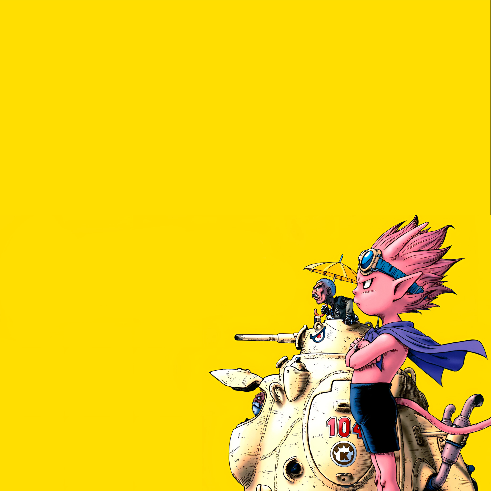
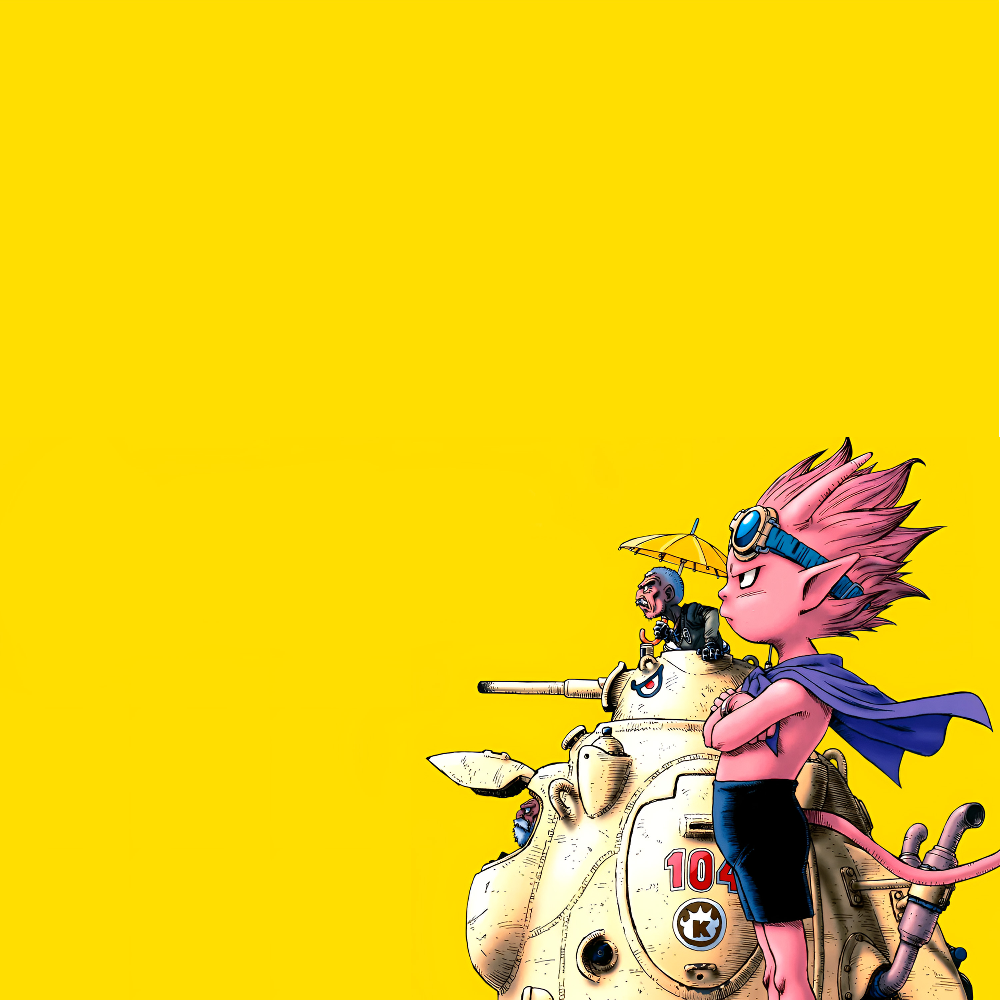
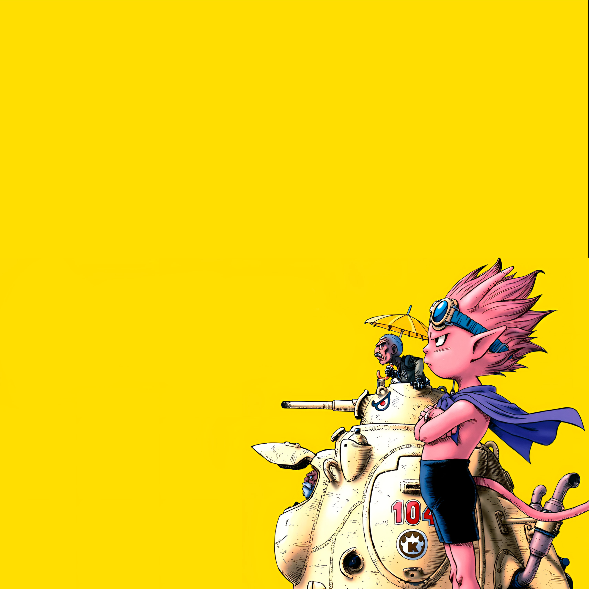
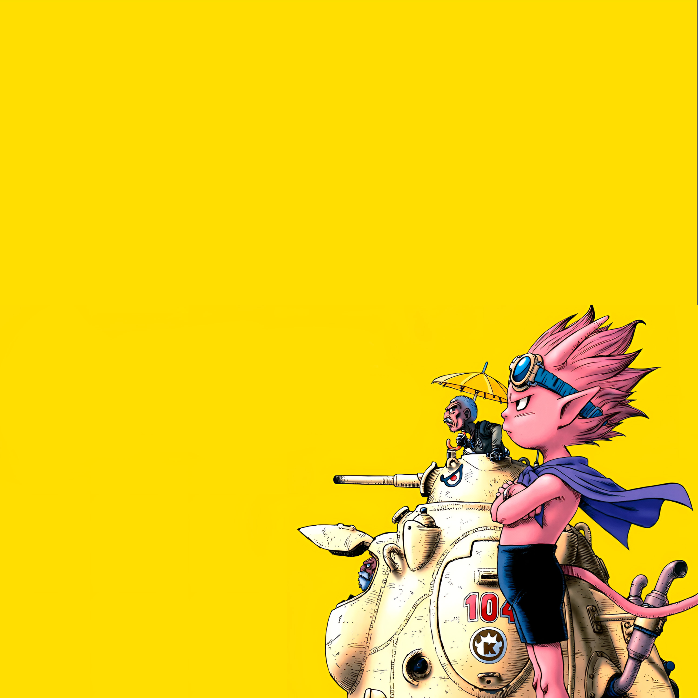
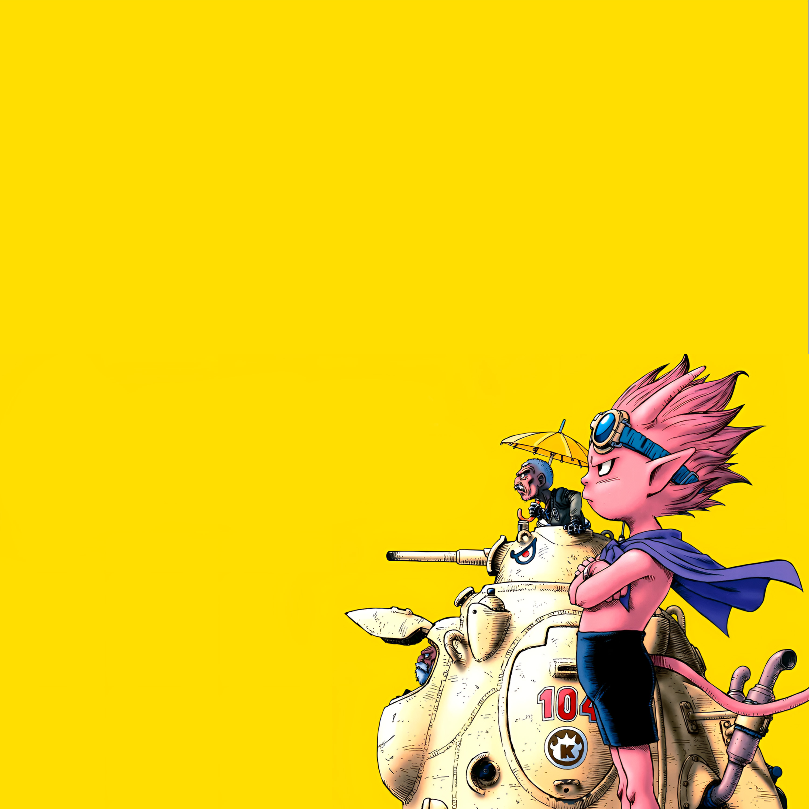
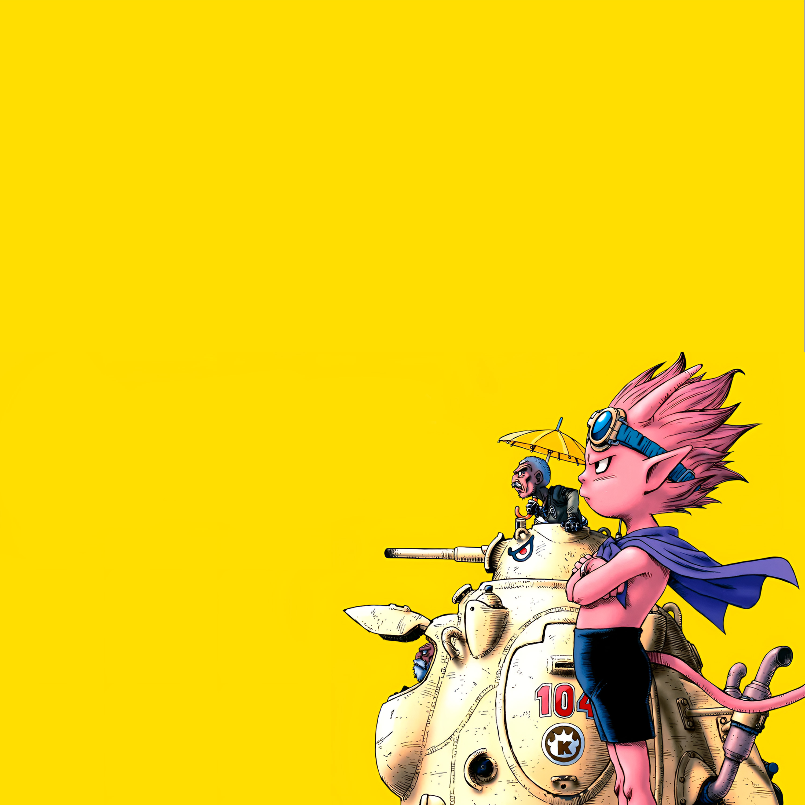
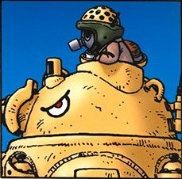

A história do jogo SAND LAND se passa em um futuro distante, onde a Terra foi devastada por tempestades e outros desastres naturais, que transformaram tudo num deserto conhecido como Sand Land. Todo o deserto foi tomado por um rei tirânico e ganancioso, que controla o abastecimento de água apenas para si mesmo. Em meio a esse caos, os humanos começaram a coexistir com demônios e a enfrentar o desespero por causa da sede e fome no deserto. Cansado da opressão do rei, o velho xerife Rao sai em busca de um lago lendário que poderia ser a salvação para todos os humanos. Para encontrar este lago, Rao pede ao príncipe dos demônios, Belzeebub, para se juntar a ele nesta jornada!
Beelzebub é conhecido como o "Príncipe do Submundo", mas geralmente referido apenas como "Príncipe" por seus companheiros demônios. Ele mora em Sand Land, um deserto árido habitado por humanos e demônios onde o abastecimento de água é controlado por um rei humano ditador. Beelzebub tenta viver em relativa harmonia com os humanos: embora ele regularmente roube água deles, ele apenas tira o tanto que ele e seus companheiros demônios precisam para sobreviver. Simplesmente por tédio, Beelzebub e um sábio demônio chamado Ladrão junta-se ao Xerife Rao em busca de um lago indescritível que possivelmente irá atender às necessidades fisiológicas de todos os habitantes. Na busca pelo lago, o trio confronta várias vezes o exército do rei e descobre a verdade por trás de muitos mistérios. Beelzebub empresta ao velho xerife sua visão aprimorada e força demoníaca para lutar contra o exército do rei e derrubar o tirano rei humano. Apesar de se tratar de um demônio, o menino é bastante interativo, e irônico nas suas falas trazendo um ar leve, no qual não esperamos de um principe demoniaco.
“Ainda não assisti toda a gameplay do jogo. No entanto, expandimos enormemente a visão de mundo
do mangá original com muitos elementos interessantes. Este jogo independente tem uma ótima qualidade,
posso dizer que é um jogo de RPG de ação altamente satisfatório!
Em primeiro lugar, os gráficos apresentam um excelente equilíbrio entre a atmosfera do mangá e seu
estilo de desenho. A representação parece ótima. O jogo certamente lhe proporcionará uma experiência emocionante,
experimente um genuíno senso de design e atenção aos detalhes, desde os muitos veículos novos, diversas personalizações, bem como o design do plano de fundo!
No Jogo, não existe apenas o mundo de SAND LAND, mas também um novo mundo chamado FOREST LAND
com novos personagens, que não estavam no mangá. Você pode desfrutar de uma história mais substancial e de um
vasto mapa para se aventurar enquanto joga com o Príncipe Demônio.
Eu mesmo só posso jogar jogos casuais, mas dou uma olhada nos jogos populares que minha família joga,
e acho que sei um pouco sobre eles, mesmo para um homem velho.
Eu recomendo seriamente o jogo “SAND LAND”! ”
-Akira Toriyama
 Akira Toriyama foi um autor de mangá japonês, nascido em abril de 1955 em Aichi. Aos 23 anos, ele decidiu se dedicar a enviar seus trabalhos amadores para concursos editoriais, mais especificamente para a Weekly Shounen Jump. Depois de lançar algumas histórias curtas e independentes, foi em 1980 que o autor finalmente conseguiu ser catapultado para o sucesso. Entre suas principais obras estão Dr. Slump e Dragon Ball.
Inspirado em um livro chinês chamado "Jornada ao Oeste", ele contou a história de um garoto chamado Son Goku, que treinava artes marciais e, junto com seus amigos, buscava as Esferas do Dragão. A história avançou tanto que a saga, entre tantos eventos, mostrou a transição de menino para adulto, ou melhor, de Son Goku para Goku, um dos personagens mais famosos da história.
Toda a trama se estendeu por 11 anos (de 1984 a 1995), ou foi descoberta em cerca de 42 volumes, cada um com uma média de 200 páginas. Além disso, o sucesso de Dragon Ball foi tão grande que o anime se tornou uma série de televisão e até acabou em jogos de vídeo.
Dragon Ball teve um impacto significativo na indústria de anime, ajudando a popularizar o gênero shōnen (voltado para adolescentes do sexo masculino) em todo o mundo. Sua combinação de ação frenética, personagens cativantes e temas universais como amizade, coragem e superação de desafios conquistou uma grande audiência. Dragon Ball também introduziu muitos elementos que se tornaram padrão em anime e mangá, como torneios de luta, transformações poderosas e batalhas intensas.
Akira nos deixou em 1º de março de 2024, deixando seu legado e obras que inspiraram vários outros autores e artistas.